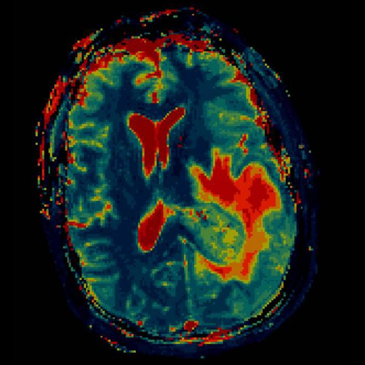

Siemens Healthcare recently developed a new type of MRI machine capable of giving numerical results for each of the measured tissue variables. With this in mind, I was tasked with creating a new visualization method capable of leveraging this data, allowing doctors to more easily identify issues with the normal tissue.
Starting by researching current literature on visualization methods, I found promise in papers on bacteria and petri dish analysis. Using a similar approach, I created a preliminary algorithm that simply assigned the value of a variable to a color channel, resulting in characteristic hues for each kind of tissue. This program proved to be very useful in identifying different structures on the image. For example, bone would show in yellow, while white matter was a light pink. Despite this, tumors and bleeds had a similar composition to the brain matter around it, so I needed to refine this algorithm to show a better hue contrast.

After testing with several datasets, I decided to use clustering and assign hues based on the distance of a variable set to a cluster’s center. This approach allowed me to individually manipulate the color of each physiological structure, which resulted in a clear distinction between healthy tissue and tumors.
Because of the novelty of both of these approaches, I wrote and applied for a patent on behalf of Siemens, and it was finally published in April 2019.